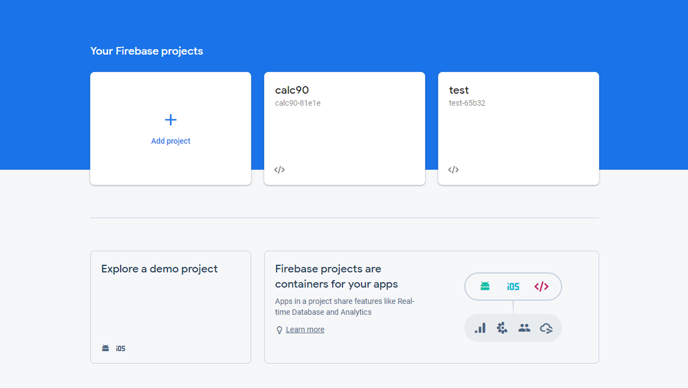
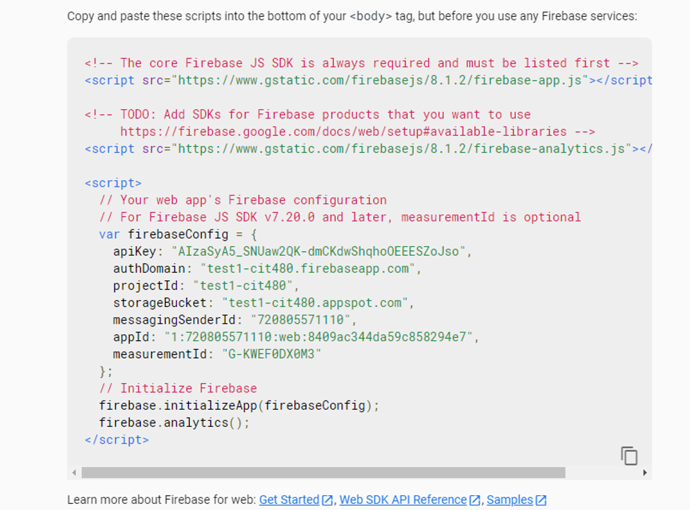

Welcome to my webpage. Here, I will share weekly blogs for my CIT 480 class.
Firebase is built on Google’s infrastructure and is a great platform for mobile and web application developers. Firebase offers services such authentication, real-time database, storage, hosting, and more. In today’s blog, I will go over how to get started with firebase hosting services.
-The first step is to create a Firebase account. If you have a google account,
then you can just use your Google account’s credentials to sign in.
-Once you sign in, go ahead and create a new project.

-After you go through the steps of creating a project, Firebase will generate a script
which contains the core Firebase SDK, libraries, and the web app’s configuration script.
All you need to do is copy/paste the script in your HTML or JS files.

-Now we are going to need to install Firebase tools to be able to deploy our project to Firebase.
Install firebase tools(CLI) on your lcoal terminal using:
npm install –g firebase-tools
-Both npm and nodejs are needed in order to install firebase tools.
-Nodejs can be installed from here.
-Firebase tool are then used to deploy our websites to the backend.
-After you have installed the Firebase tools, you will need to login to your
Firebase account using:
firebase login
-Next you are going to initialize your project using:
firebase init
-You can test your website locally using:
firebase serve
-After you are done building your website, you can easily deploy your website to
Firebase by using:
firebase deploy
And that is how you host a website on Firebase for free.